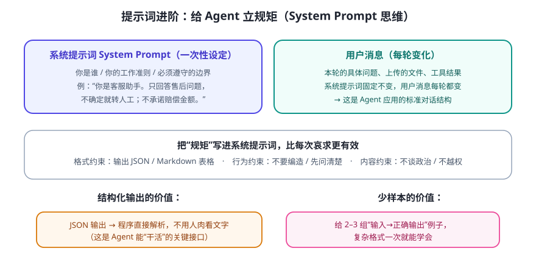

做 Agent 和平时聊天最大的区别是：你要的不是“一次答得好”，而是“每次都稳定”。靠临场发挥不行，要把规矩写进一个固定的系统提示词（System Prompt）里。
系统提示词 vs 用户消息

写系统提示词的四个要点
- 定身份与职责：它是谁、负责什么、不负责什么（“你只处理售后，不做销售推荐”）。
- 立边界：不能做什么、不确定时怎么办（“信息不足就明确说不清楚，禁止编造”）。
- 定输出契约：返回 JSON 还是表格？字段叫什么？给一个 schema 或示例。
- 给反例：“不要这样做：____”比只给正例更能防跑偏。
【系统提示词（示意模板）】
你是__产品的__角色__。
职责：__（能做什么）__。
边界：__（绝不做什么）__；信息不足时__（怎么处理）__。
输出：始终返回如下 JSON，不要输出多余文字。
{"answer": "你的回答", "sources": ["依据来源"], "confidence": 0~1}
【示例】用户问：__…__ 你应返回：__…__
为什么 Agent 必须用结构化输出
因为 Agent 的下游是程序，不是人。程序需要稳定地拿到 JSON 才能继续执行：取出参数去调工具、取出结果去填数据库。模型偶尔多写一句“好的！”就会让程序崩溃——所以把输出格式写进系统提示词 + 程序侧做解析兜底，是工程标配。
💡 进阶心法：提示词也是代码
把系统提示词当成代码来管理：放进配置文件、写版本、做回归测试（换了个说法问它，看它还守不守规矩）。Day 23 讲 Agent 评测时会用到。
把系统提示词当成代码来管理：放进配置文件、写版本、做回归测试（换了个说法问它，看它还守不守规矩）。Day 23 讲 Agent 评测时会用到。
✍️ 今日练习（约 12 分钟）
- 挑一个你熟悉的场景（如“健身教练”），写一份含身份/边界/输出格式/一个反例的系统提示词。
- 让模型“以 JSON 输出 3 条今日建议”，观察它是否遵守；再故意要求“同时用表格输出”，看它在冲突指令下怎么表现。
- 把上一轮的提示词改 1 个词（比如边界），连续问 3 遍，体会“稳定性”为什么重要。
📌 今日小结
核心转变从“问得好”到“规矩写死、每次都稳”
系统提示词身份 + 职责 + 边界 + 输出契约 + 反例，每轮生效
结构化输出JSON 是 Agent 与程序协作的“接口”，必须稳定
工程化提示词版本化、可测试，像对待代码一样
明天预告：窗口是有限的，怎么把历史与资料“装”得恰到好处？学上下文工程。